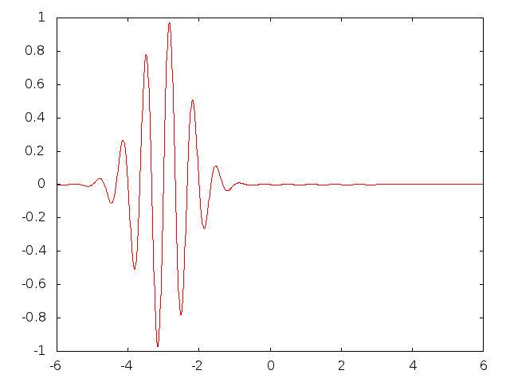

$$
\renewcommand{\u}{\pmb{u}}
\newcommand{\xbm}{\boldsymbol{x}}
\newcommand{\normalvecbm}{\boldsymbol{n}}
\newcommand{\ubm}{\boldsymbol{u}}
$$
$$
\newcommand{\x}{\pmb{x}}
\newcommand{\normalvec}{\pmb{n}}
\newcommand{\Ddt}[1]{\frac{D#1}{dt}}
\newcommand{\halfi}{1/2}
\newcommand{\half}{\frac{1}{2}}
\newcommand{\report}{test report}
$$
On the Technicalities of Scientific Writing Anno 2012: The Doconce Way
On the Technicalities of Scientific Writing Anno 2012: The Doconce Way
Hans Petter Langtangen [1, 2]
[1] Simula Research Laboratory
[2] University of Oslo
Aug 16, 2013
Figure and bullet list
Here is a wave packet
It can move
But here it is just a figure

Here we have a paragraph to pop up in red.
And a line more
[hpl 1: Here are some notes that can go to notes typesetting
in the slide environment.]
One can also have ordinary notes.
Over multiple lines.
Scientific writing needs to address many new media
Old days (1985-2005): mostly black-and-white documents aimed at printing
Now: also color PDF, web pages, wikis - for paper, PC, iPad, ...
LaTeX writing may be very different from writing in other formats
Main problem:
LaTeX provide all sorts of fancy packages, but
PDF in browsers has limited capabilities (design, navigation)
compared to native HTML formats
Conclusion: We need more than LaTeX
Some math and computer code
$$ f(x,y,t) = e^{-xt}\sin\pi y $$
Python implementation:
importnumpyasnpdeff(x, y, t):
return np.exp(-x*t)*np.sin(np.pi*y)
classFancy:
def__init__(self):
passdef__call__(self, x, y, t):
return f(x, y, t)
f2 = Fancy()
Admon blocks
Can use admons to simulate blocks:
Key PDE:
This box has title and math in normal 90 percent font:
$$ \frac{\partial u}{\partial t} = \nabla^2 u $$
Just some block with text and a conclusion that something is important.
This one pops up after the rest of the slide.
Warning.
Can use, e.g., a warning admon to have my own notes, preferably
inside preprocess/mako if statements to turn notes on and off.
This one is typeset in a small font and with the default
title (Warning) since no title is specified.